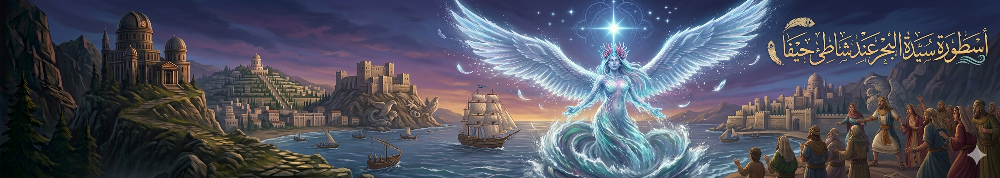
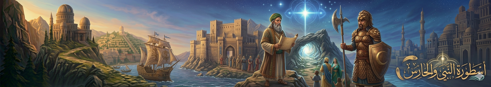

"في كل حكاية.. فلسطين"

أسطورة سيدة البحر عند شاطئ حيفا
يُحكى أن البحر قبالة حيفا لا يهدأ تمامًا، لأن “سيدة البحر” تعيش فيه. كان الصيادون يقولون إنهم يرون امرأة طويلة الشعر تظهر عند الغروب، تمشي فوق الماء ثم تختفي بين الأمواج. وإذا كانت راضية عن الناس، يكون البحر هادئًا ويعطيهم صيدًا وفيرًا، وإذا حزنت، ترتفع الأمواج فجأة بدون إنذار.

أسطورة كهف النور في الكرمل
في سفوح جبل الكرمل كان يوجد كهف لا يدخله أحد بعد الغروب. ويُقال إن من يدخل هذا الكهف يرى نورًا أزرق غريبًا لا يشبه النار ولا الشمس. بعض الرعاة قالوا إنهم سمعوا داخله أصوات ترانيم قديمة، وكأن الجبل نفسه يتكلم مع الداخلين. لكن كل من حاول البقاء طويلًا داخله خرج مرتبكًا، ويقول إن الوقت بدا وكأنه توقف.

أسطورة النبي والحارس
من أشهر الحكايات المرتبطة بالكرمل، قصص عن نبي قديم عاش في الجبل، وتقول الأسطورة إن روحه ما زالت تحميه. كان الناس يعتقدون أن هناك “حارسًا خفيًا” يظهر في العواصف، يقف فوق الصخور العالية ليمنع الصخور من الانهيار على المدينة. لذلك كان البعض يتجنبون الصعود إلى أماكن معينة احترامًا لهيبة الجبل.